git常用命令-根据廖雪峰git教程总结
git常用命令记录
git initgit add <file>，例如 git add readme.txt。使用git add .或者git add -A表示把整个工作区中的文件都添加到暂存区中，但是有时我们不想让某些固定格式或者名字的文件添加到暂存区，这个时候就需要用到gitignore文件，关于gitignore的用法如下所示。gitignore
第一步，创建.gitignore文件
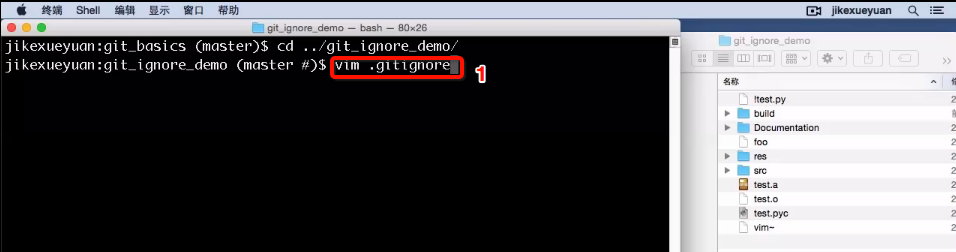；
第二步，编辑.gitignore文件，把要排除掉的文件纳入到gitignore系统里。
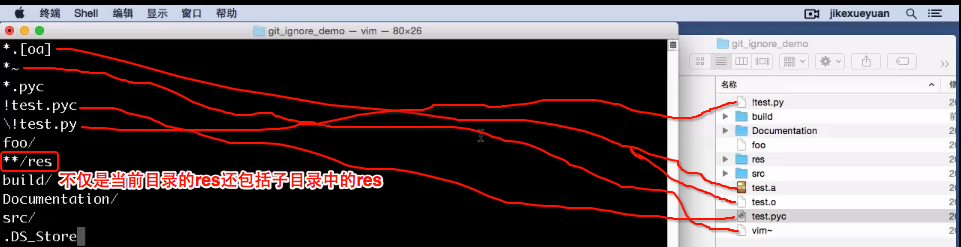
第三步，把.gitignore文件添加到我们的仓库当中，用于整个仓库的共享。
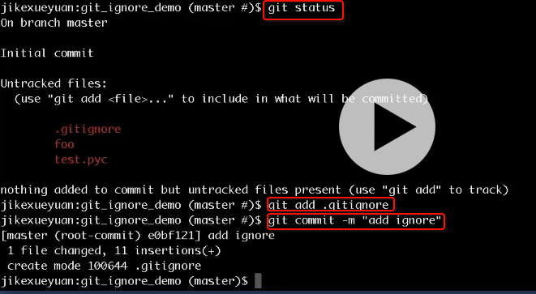git commit -m "some info about this commit"，例如git commit -m “initial commit on master”git status，显示当前暂存区的状态git diff <file>，显示某文件在工作区中的内容变化情况，只能对比当前状态和上一次提交前的对比，而不能对比工作区和暂存区甚至是仓库之间的文件内容。如果只输入git diff的话，显示的就是工作区和暂存区之间的差异，如果输入git diff --cached显示的是暂存区和历史记录之间的差异。就是可以各种比较，还可以输入两个commit对象，来对比两个commit之间的差异。例如git diff HEAD HEAD^2就是对比了当前的commit和上两个commit之间的差异。git log，命令显示从最近到最远的提交日志。只可以显示git commit提交后的日志，而无法显示git add后的变化日志。还可以通过在末尾添加--pretty=oneline让日志以单行的形式显示。git reset --hard commit_id，可以将head指针指向对应的commit_id，进而变化为某一个阶段的状态。也可以是git reset --hard HEAD^回退到上一个commit，或者git reset --hard HEAD^^回退到上上个commit，甚至git reset --hard HEAD~100回退到前100个commit的状态。git reflog，用来记录你的每一次命令commit和reset的命令，用于查找找不到的commit状态。git reset命令既可以回退版本，也可以把暂存区的修改回退到工作区。当我们用HEAD时，表示最新的版本。例如，git reset HEAD readme.txt表示将暂存区的修改回退到工作区，这样的话暂存区就没有任何提交了，可以再使用git checkout -- readme.txt把还与回最初的状态。- git checkout – readme.txt意思就是，把readme.txt文件在工作区的修改全部撤销，这里有两种情况：
一种是readme.txt自修改后还没有被放到暂存区，现在，撤销修改就回到和版本库一模一样的状态；
一种是readme.txt已经添加到暂存区后，又作了修改，现在，撤销修改就回到添加到暂存区后的状态。
总之，就是让这个文件回到最近一次git commit或git add时的状态。 git config相关的增删改查。首先git config 有三个层次，–system / –global / –local。1.增：直接用键值对的形式增加即可，例如git config --global user.name jikexueyuan或者git config --global --add user.name eoe。可以同时有两个一样的键，就像刚下的那样，有两个user.name的键值对。2.查：用的是–get命令，例如git config --get user.name，或者git config --list --global都可以看到上面添加的两个user.name的键值对。3.改：直接用键值对的形式修改就可以了，例如git config --global user.name test直接可以将上面的user.name修改为test。4.删：用的是–unset的命令，例如git config --global --unset user.name eoe就可以将eoe的键值对删掉只保留最开始的jikexueyuan的键值对。git config还有个重要的作用就是修改命令的快捷键，例如git config --global alias.co checkout，这个命令可以把平时常用的git checkout改为git co。git rm，用来删除暂存区中的内容。git rm a会同时把工作区里的a和暂存区里的a引用删除掉，如果想只删除暂存区的a而不想删除工作目录里的a的话，就使用git rm --cached a。git mv，工作区中重命名文件或者移动文件。gitignore，用于把工作区中一些不想被添加到暂存区和历史记录里面的文件忽略掉。- 有颜色显示的情况下，红色表示在暂存区中的内容被修改了（增删改查都算），而绿色表示在暂存区中有内容可以commit到历史记录里。
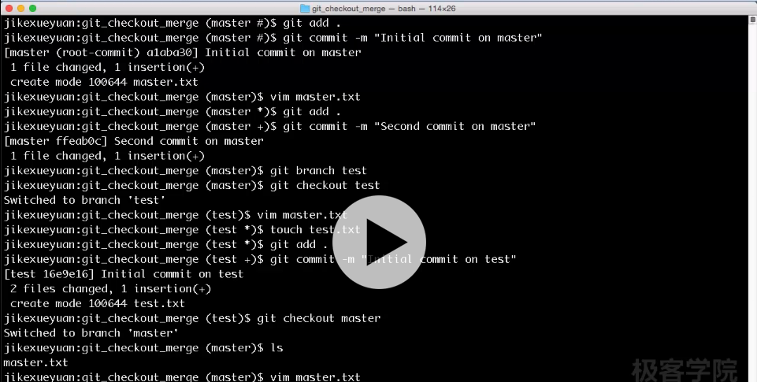
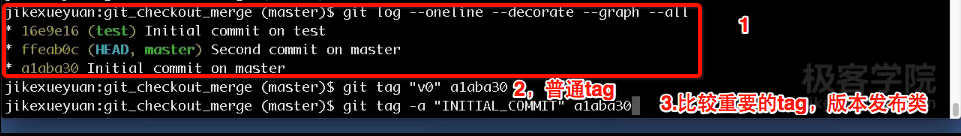
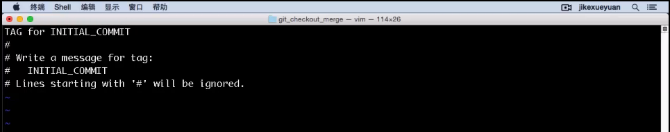
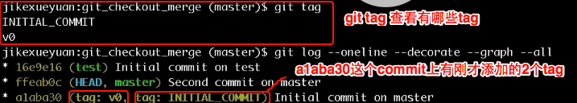
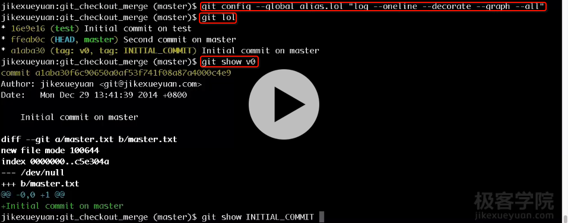
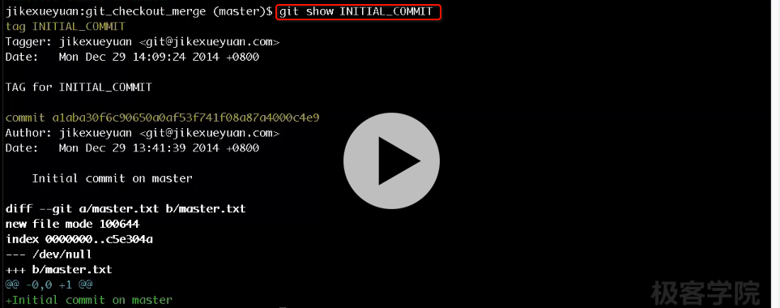
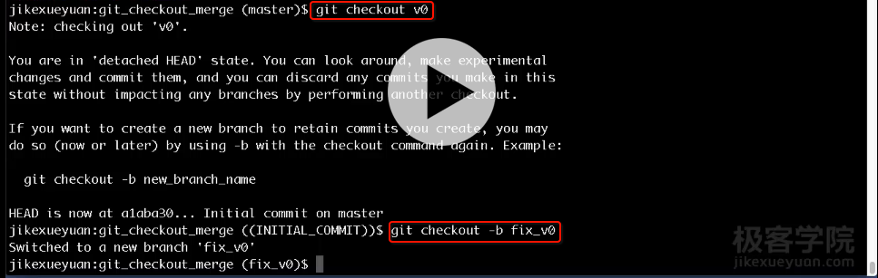
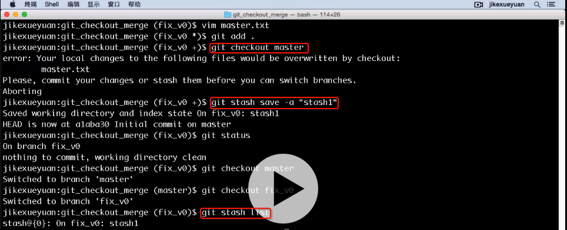
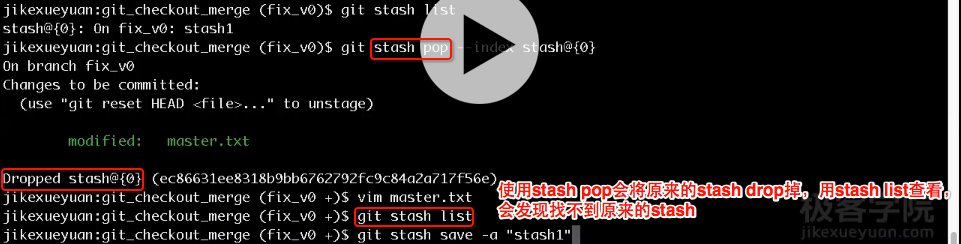，注意这里stash pop后面有个–index参数，表示还要还原暂存区。
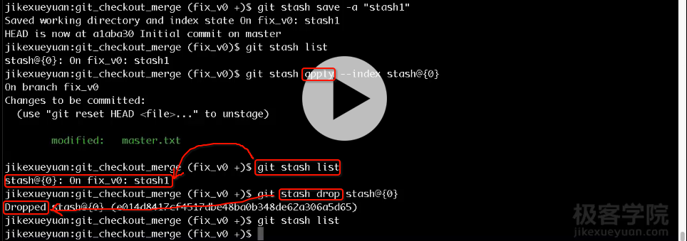切换回stash的前提是回到这个分支，而且想清理多个stash的事情可以使用git stash clear命令，一次将分支上的stash全部清理掉。
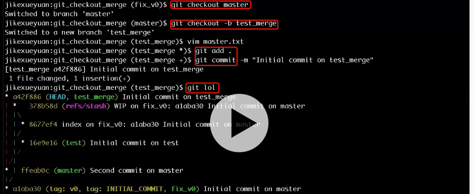
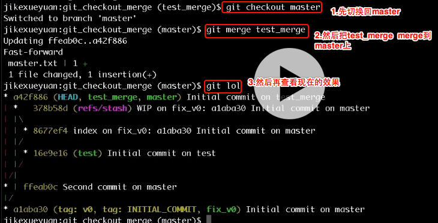
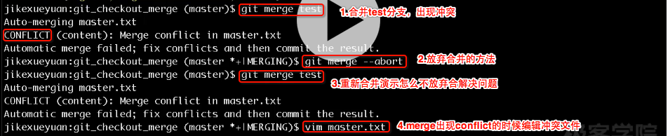
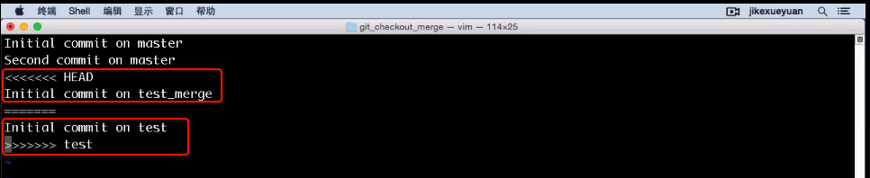
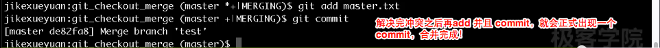
git show可以显示某个git对象的详细信息，例如git show a42f886这样一个commit的详细信息，也可以通过git show master或者git show master^2这类语句类显示master分支上的第一副提交或者第二副提交等等。git show还可以显示一个tag对象，一个tree对象，一个blob对象。git checkout，git checkout -- master.txt表示抛弃所做的修改，其实本质是用暂存区的内容覆盖工作区的内容，其实也就是让工作区的修改被抛弃掉。git reset其实相当于是历史区还原暂存区。git pull其实是git fetch和git merge的一个组合操作。